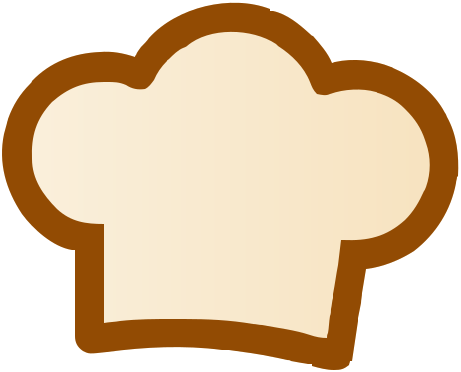

1:1 parity — mockup vs svg

mockup
وجبة


Hat: the supplied icon (png-to-svg-converter.svg), used as-is — white
background and JPEG-noise speckle paths removed, viewBox cropped to the glyph. Two paths:
outline #924B03, fill #FEDAB6. Wordmark: Baloo Bhaijaan 2.
Silhouette overlap with the mockup hat is 0.919; the mockup drew a thinner stroke over a
cream fill, so its 1:1 ink weight differs — the icon is the source of truth.